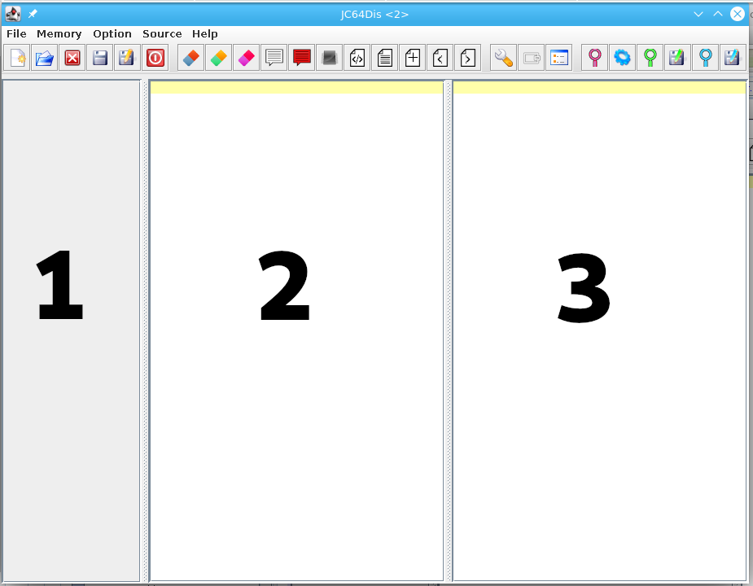

JC64dis is the next generation of C64 disassembler.
It can handle:
JC64dis works with 3 main area:

It is born with the porpoise to be interactive, so you can use it for improve reliability to the raw source generated by the disassembler (you can change the kind of source code to generate in option).
Step by step you can understand the code and gives a human readable form to it.
To be able to create this reverse engineering source code, the program needs to collect a good deal of information, so at every passage to the binary data, the generated source acquire a better form.
For this the program works with a project (a .DIS file) where all information are saved.
In order to undestand all about the program, each section here will describe each aspect in details:
And even each menu entries: